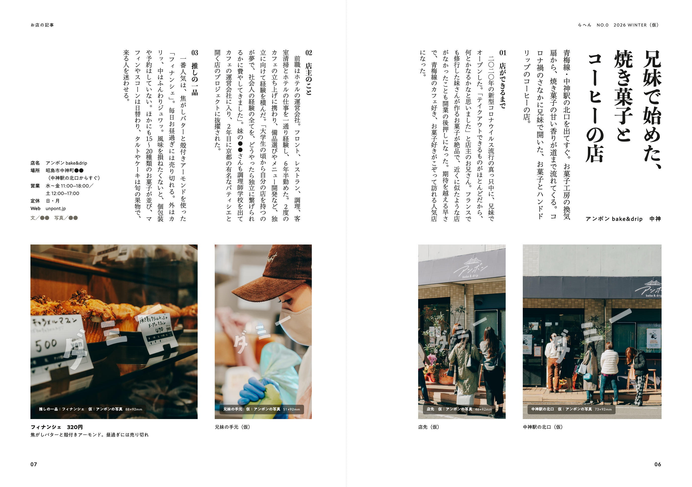
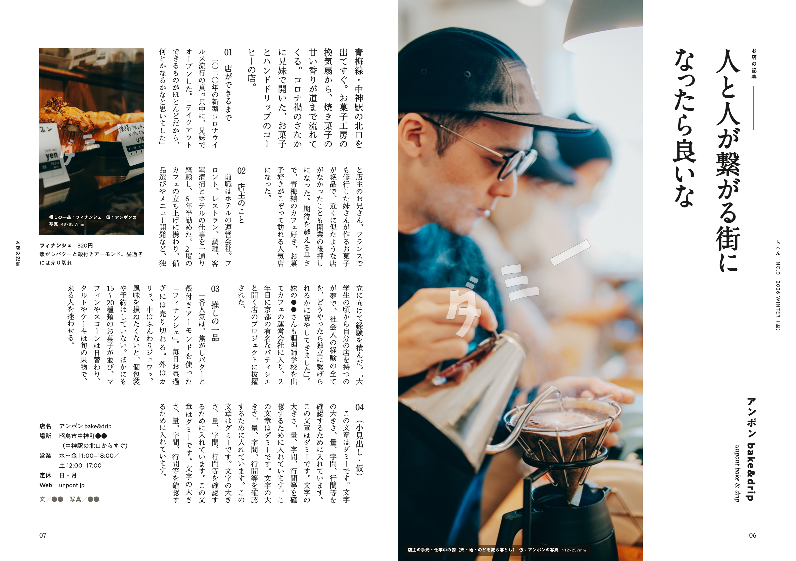
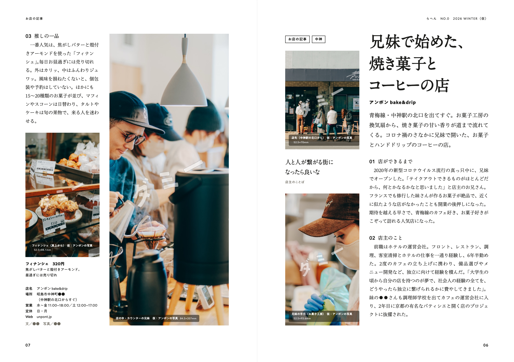

らへん ゼロ号
全ページのレイアウト案 4つ
冊子1冊（P1〜P20）ぶんのレイアウト案です。どの案も、1見開きずつ見る・本のようにめくって見る・PDFで見る、ができます。B5実寸。写真はすべて「ダミー」の透かし入りの仮置き、広告は灰色の枠、本文の多くはダミー文です。
4つの案見開きの見本から開く
見本はどれも、お店の記事（P6–P7・アンポン）の見開きです。押すと、その案のページが開きます。

道順の絵巻縦組みE・H・J上に文、下に写真の帯。北口から一品まで、読む順＝歩く順。この案を見る→02
ことばの縦組み縦組みA・G・J店の人のことばを大きく縦に。右から左へ読み、左下で終わる。この案を見る→03 問いと町の声縦組み新しい縦（型S）・H・J1つの問いを号の最後まで通す。店の人と町の人の声を縦の帯で並べ、読み終わると一品に着く。この案を見る→04
問いと町の声縦組み新しい縦（型S）・H・J1つの問いを号の最後まで通す。店の人と町の人の声を縦の帯で並べ、読み終わると一品に着く。この案を見る→04
読む頁と見る頁横組みF・I・L右ページで読ませ、左ページは大きな写真で見せる。全部横組みで、真ん中は1ページ全部の写真。この案を見る→比べる4案の違い
観点ごとに横に読むと、案の違いが分かります。細かい違いは、各案のページの「まだ決まっていないこと」と見開きの説明に。
| 観点 | 01道順の絵巻 | 02ことばの縦組み | 03問いと町の声 | 04読む頁と見る頁 |
|---|---|---|---|---|
| 記事の向き | 縦組み13ページ・横組み2ページ（P14・P15） | 縦組み13ページ・横組み1ページ（P14）・縦横半々1ページ（P15） | 縦組み12ページ・縦横半々2ページ（P14・P15）・写真だけ1ページ（P11） | 横組み15ページ（縦組みなし） |
| 骨組み | 上に文、下に写真の帯。北口から一品まで、読む順＝歩く順 | 縦の帯を右から左へ。店の人のことばで入り、左下で終わる | 右から、地の文 → 町の写真 → 声の帯 → 一品の写真。読み終わると一品に着く | 右ページで読ませ、左ページは大きな写真で見せる |
| 写真 | 同じ高さの写真4点を、歩く順に下の帯に並べる | のど側に大きい1枚（紙の端まで）と、小口に小さい1枚 | 町と人は黒1色、一品と店の中はカラー。一品は縦長に大きく | 縦長の大きい1枚と小さい1枚。真ん中の P11 は1ページ全部 |
| 見出し | 記事の題（凸版文久見出し明朝） | 店の人のことば（A1明朝）。店名は見出しにしない | 記事の題（凸版文久見出し明朝）と、号を通す「今号の問い」 | 記事の題（A1明朝） |
| 色 | 墨と藍（番号だけ） | 墨1色 | 墨と藍（今号の問いの札だけ） | 墨1色 |
| 取材で集めるもの | ふつうの取材に加えて、北口から店までの道順の写真 | ふつうの取材に加えて、見出しにする店の人のひとこと | ふつうの取材に加えて、常連・近所の人の声（各店2人）と掲載の許可、問いの答え（8人） | ふつうの取材だけ |
| 仕上げの道具 | 縦組みのできる組版ソフト（InDesign など） | 縦組みのできる組版ソフト（InDesign など） | 縦組みのできる組版ソフト（InDesign など） | 横組みだけなので、Figma など横組みの道具でも仕上げられる |